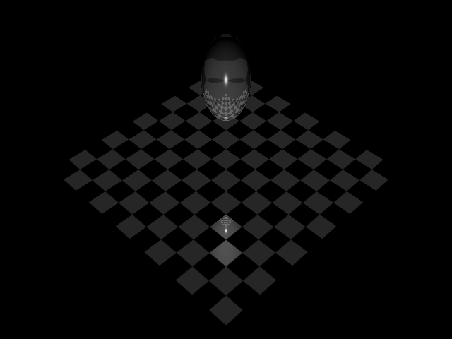
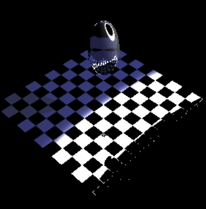

Henry Deutsch
hdeutsc3
Visual Studio Code
0 late days used
Everything is fully implemented & working
Henry Deutsch
hdeutsc3
Visual Studio 2019
Late days used: 1
Everything up until accelerated ray tracing is done + texture synthesis (28 pts of functions)
.h files changed:
Art contest ray file in ./hdeutsc3_HTML/art_ray.ray
Art contest ray file rendering:
(light inside the sphere)
Art contest png in ./Static3D/art_image.png
Failed implementation of diffuse color that made the sphere look kinda cool
